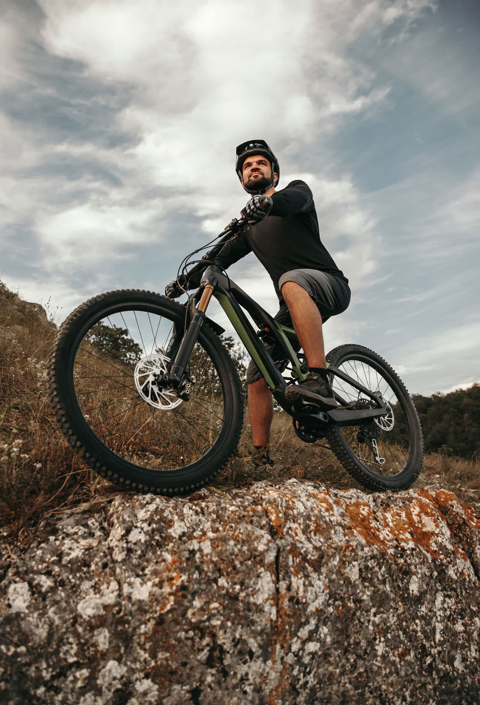
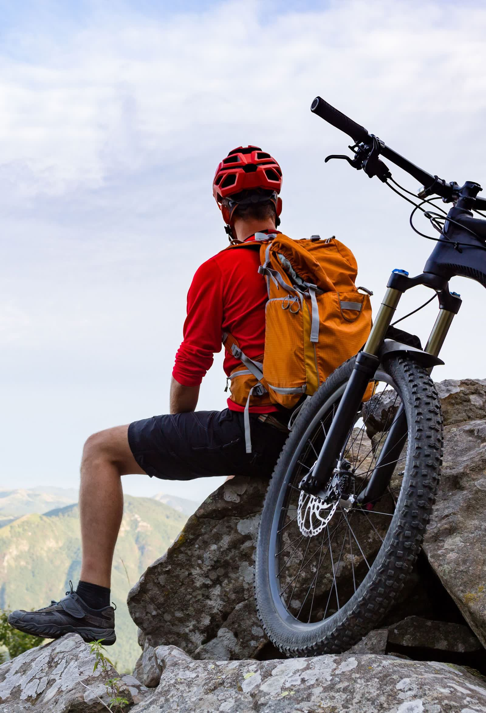
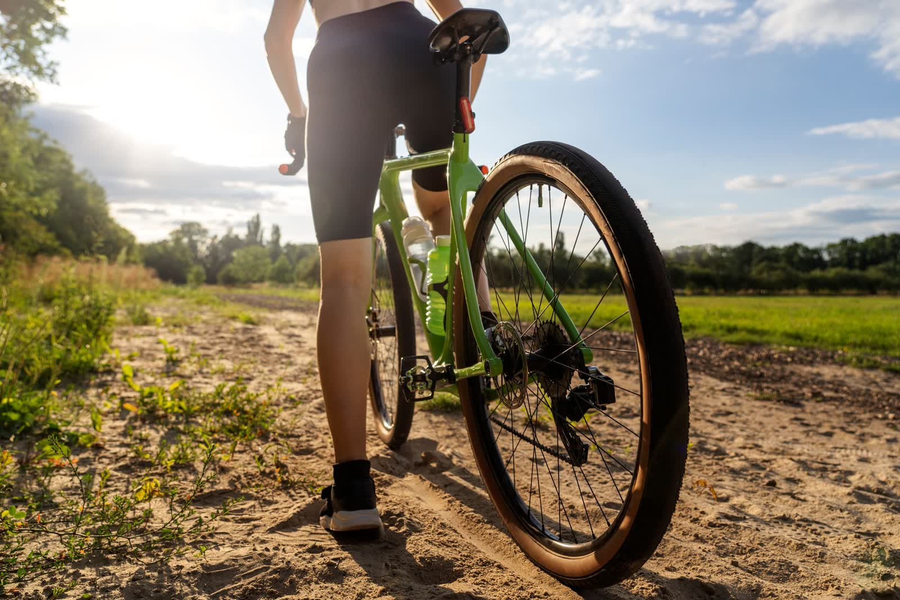
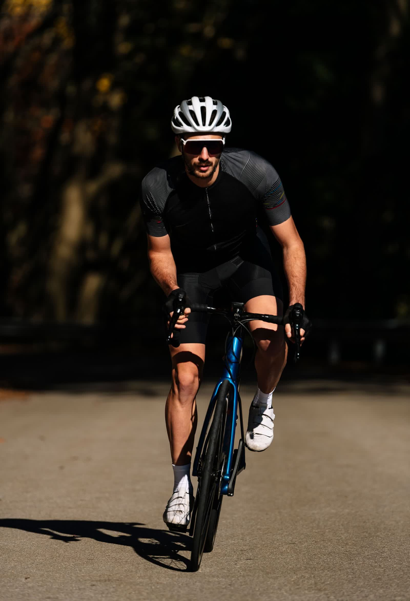
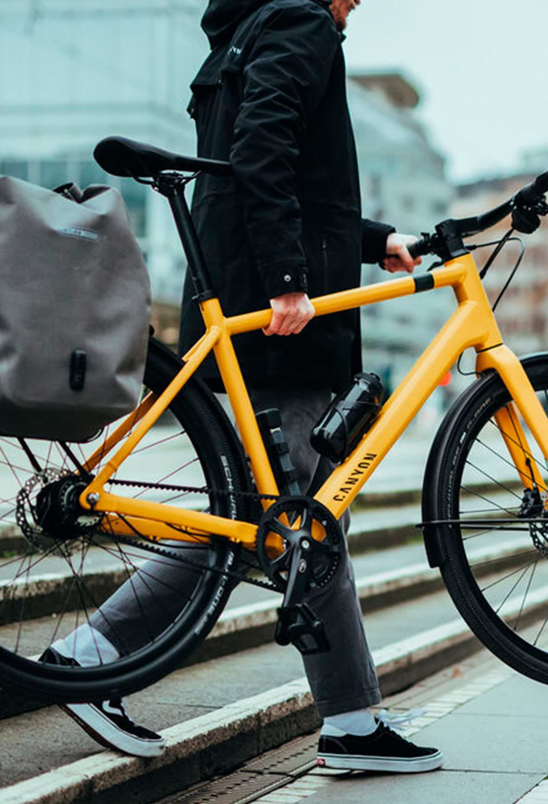

Eléctricas, de montaña, gravel, carretera y ciudad. Las mejores marcas para cada tipo de ciclismo.

Bicicletas eléctricas de montaña y paseo con las últimas tecnologías en motorización y batería. Potencia, autonomía y diversión para tus rutas, ya sea por senderos técnicos o por caminos tranquilos.

Bicicletas de montaña para trail, enduro y cross country. Cuadros de aluminio y carbono con geometrías modernas, suspensiones de alto rendimiento y componentes de primera línea.

Las gravel combinan la velocidad de una bicicleta de carretera con la capacidad de rodar por caminos y pistas. Versatilidad total para explorar cualquier terreno.

Bicicletas de carretera de competición y gran fondo. Cuadros aerodinámicos, grupos de transmisión de última generación y ruedas de alto perfil para los ciclistas más exigentes.

Bicicletas urbanas pensadas para la movilidad del día a día: cómodas, prácticas, ligeras y fiables. El medio de transporte más eficiente y sostenible para tus desplazamientos.
Ven a la tienda y prueba las bicicletas. Nuestro equipo te asesorará para que encuentres la que mejor se adapte a tu tipo de ciclismo y a tu presupuesto.